Publications
Papers from the Derksen group, newest first.
2025
-
33
A Problem-Based Introduction to Machine Learning in the Undergraduate Organic Chemistry Laboratory: Prediction of Diels–Alder Reaction Rates
J. Chem. Educ. 2025, 102, 3443–3451. doi:10.1021/acs.jchemed.5c00313
-
32
Development of Electronically Tuneable N-Heterocyclic Borates
Chem. Commun. 2025, 61, 10610–10613. doi:10.1039/D5CC01578B
2024
-
31
Development of Tetrahydroquinoline-Based Inhibitors for Chronic Pain
ACS Chem. Neurosci. 2024. doi:10.1021/acschemneuro.4c00316
-
30
Pannexin-1 Channel Inhibition Alleviates Opioid Withdrawal in Rodents by Modulating Locus Coeruleus to Spinal Cord Circuitry
Nat. Commun. 2024, 15, 6264. doi:10.1038/s41467-024-50657-7
-
29
Leveraging Pyrazolium Ylide Reactivity to Access Indolizine and 1,2-Dihydropyrimidine Derivatives
Chem. Eur. J. 2024, 30, e202400421. doi:10.1002/chem.202400421
2023
-
28
Utilising the Intrinsic Fluorescence of Pomalidomide for Imaging Applications
Chem. Commun. 2023, 59, 14532–14535. doi:10.1039/D3CC04314B
Part of the 2023 Pioneering Investigators themed collection.
-
27
macroH2A2 Antagonizes Epigenetic Programs of Stemness in Glioblastoma
Nat. Commun. 2023, 14, 3062. doi:10.1038/s41467-023-38919-2
2022
-
26
Identification of Ligand Linkage Vectors for the Development of p300/CBP Degraders
RSC Med. Chem. 2022, 13, 726–730. doi:10.1039/D1MD00070E
Part of the Emerging Investigators themed collection.
-
25
A Vinylogous Norrish Reaction as a Strategy for Light-Mediated Ring Expansion
Chem. Commun. 2022, 58, 2910–2913. doi:10.1039/D2CC00513A
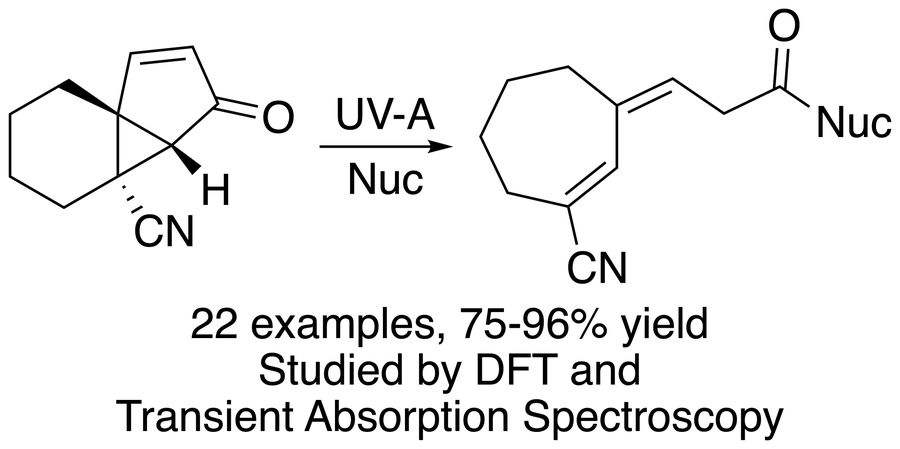
-
24
Regioselective Synthesis of C3-Hydroxyarylated Pyrazoles
J. Org. Chem. 2022, 87, 846–854. doi:10.1021/acs.joc.1c02518
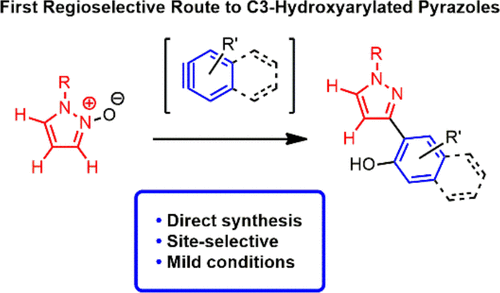
2021
-
23
Metformin Prevents Hyperglycemia-Associated, Oxidative Stress-Induced Vascular Endothelial Dysfunction: Essential Role for the Orphan Nuclear Receptor Human Nuclear Receptor 4A1 (Nur77)
Mol. Pharmacol. 2021, 100, 428–455. doi:10.1124/molpharm.120.000148
-
22
Rapid Synthesis of Pomalidomide-Conjugates for the Development of Protein Degrader Libraries
Chem. Sci. 2021, 12, 4519–4525. doi:10.1039/D0SC05442A
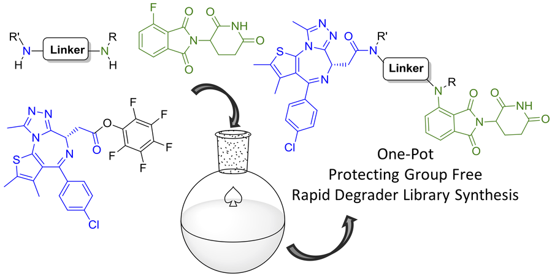
-
21
ADAM Protease Inhibition Overcomes Resistance of Breast Cancer Stem-Like Cells to γδ T Cell Immunotherapy
Cancer Lett. 2021, 496, 156–168. doi:10.1016/j.canlet.2020.10.013
2020
-
20
Pannexin 1 Channels as a Therapeutic Target: Structure, Inhibition, and Outlook
ACS Chem. Neurosci. 2020, 11, 2163–2172. doi:10.1021/acschemneuro.0c00333
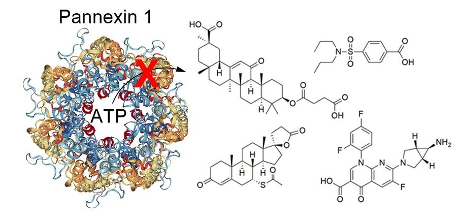
2019
-
19
From Inhibition to Degradation: Targeting the Anti-Apoptotic Protein Myeloid Cell Leukemia 1 (MCL1)
J. Med. Chem. 2019, 62, 5522–5540. doi:10.1021/acs.jmedchem.9b00455
Highlighted in Cancer Discovery (News in Depth): “Targeting MCL1, Companies Aim to Unblock Apoptosis” by Elie Dolgin, PhD. doi:10.1158/2159-8290.CD-ND2019-002

2018
-
18
Beyond Geminal Diesters: Increasing the Scope of Metal-Mediated Vinylcyclopropane Annulations While Decreasing Pre-activation
Org. Biomol. Chem. 2018, 16, 3506–3523. doi:10.1039/C8OB00593A

2017
-
17
Structure–Activity Relationship (SAR) Studies of Transient Receptor Potential (TRP) Channel Modulators
In 2017 Medicinal Chemistry Reviews; Bronson, J. J., Ed.; Medicinal Chemistry Division of the American Chemical Society: Washington, DC, 2017; Vol. 52, pp 443–463.
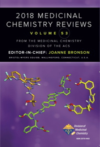
-
16
A General Strategy for the Preparation of Thalidomide-Conjugate Linkers
Synlett 2017, 28, 2881–2885. doi:10.1055/s-0036-1588539
Invited manuscript for a special issue dedicated to Professor Victor Snieckus.
-
15
Divergent Photocyclization/1,4-Sigmatropic Rearrangements for the Synthesis of Sesquiterpenoid Derivatives
Org. Lett. 2017, 19, 484–487. doi:10.1021/acs.orglett.6b03635

2016
-
14
Thiaporphyrin-Mediated Photocatalysis Using Red Light
RSC Adv. 2016, 6, 59269–59272. doi:10.1039/C6RA11374E
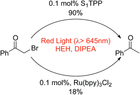
-
13
Natural-Product-Derived Transient Receptor Potential Melastatin 8 (TRPM8) Channel Modulators
Org. Lett. 2016, 18, 2746–2749. doi:10.1021/acs.orglett.6b01222

-
12
Generation of Benzyne Species from Diphenylphosphoryl Derivatives: Simultaneous Exchange of Three Functional Groups
Chem. Eur. J. 2016, 22, 8479–8482. doi:10.1002/chem.201601370

2014
-
11
Synthesis and Evaluation of Anti-inflammatory Activity of Derivatives of the Marine Natural Products Fuscol and Eunicol
Bioorg. Med. Chem. Lett. 2014, 24, 4804–4806. doi:10.1016/j.bmcl.2014.09.008
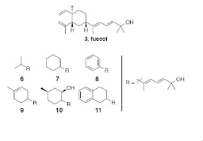
-
10
Inhibition of Serine and Proline Racemases by Substrate-Product Analogues
Bioorg. Med. Chem. Lett. 2014, 24, 390–393. doi:10.1016/j.bmcl.2013.10.061

-
9
Interactions of Protamine with the Marine Bacterium Pseudoalteromonas sp. NCIMB 2021
Lett. Appl. Microbiol. 2014, 58, 225–230. doi:10.1111/lam.12177
2013
-
8
Elucidating Absolute Configuration of Unsaturated Alcohols via Enantioselective Acylation Reactions
Org. Biomol. Chem. 2013, 11, 3432–3435. doi:10.1039/C3OB40709H
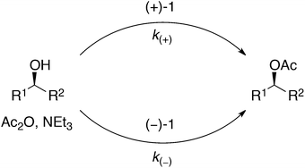
2010
-
7
Preparation and Use of Cysteine Orthoesters for Solid-Supported Synthesis of Peptides
Org. Lett. 2010, 12, 2282–2285. doi:10.1021/ol100645t
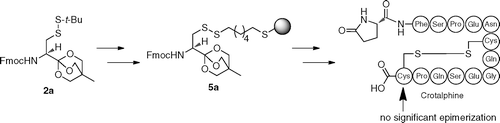
2008
-
6
Hydrophobic Interactions as Substitutes for a Conserved Disulfide Linkage in the Type IIa Bacteriocins, Leucocin A and Pediocin PA-1
ChemBioChem 2008, 9, 1898–1901. doi:10.1002/cbic.200800272
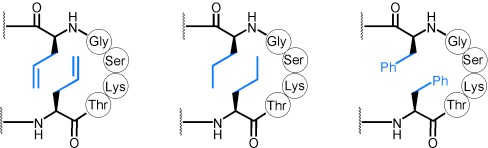
2007
-
5
Structure–Function Relationship of Inducer Peptide Pheromones Involved in Bacteriocin Production in Carnobacterium maltaromaticum and Enterococcus faecium
Microbiology 2007, 153, 3660–3666. doi:10.1099/mic.0.2007/009183-0
-
4
Multiple On-Resin Olefin Metathesis to Form Ring-Expanded Analogues of the Lantibiotic Peptide, Lacticin 3147 A2
Org. Lett. 2007, 9, 699–702. doi:10.1021/ol063133j
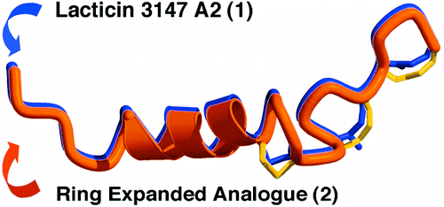
2006
-
3
Antimicrobial Leucocin Analogues with a Disulfide Bridge Replaced by a Carbocycle or by Noncovalent Interactions of Allyl Glycine Residues
J. Am. Chem. Soc. 2006, 128, 14252–14253. doi:10.1021/ja066203q
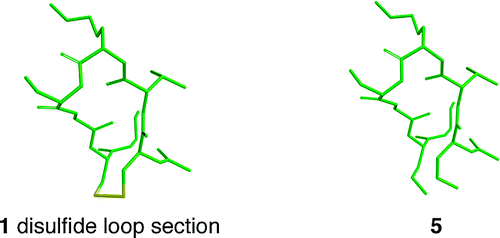
-
2
Production of Piscicolin 126 by Carnobacterium maltaromaticum UAL26 is Controlled by Temperature and Induction Peptide Concentration
Arch. Microbiol. 2006, 186, 317–325. doi:10.1007/s00203-006-0147-z
2003
-
1
Photolysis of Diacyl Peroxides: A Radical-Based Approach for the Synthesis of Functionalized Amino Acids
Org. Lett. 2003, 5, 2963–2965. doi:10.1021/ol035125y
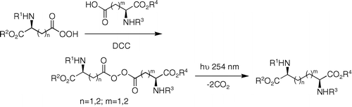